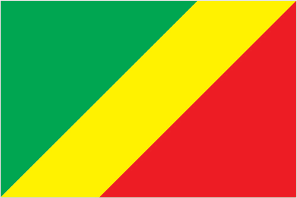

Africa :: CONGO, REPUBLIC OF THE
Introduction :: CONGO, REPUBLIC OF THE
-
Upon independence in 1960, the former French region of Middle Congo became the Republic of the Congo. A quarter century of experimentation with Marxism was abandoned in 1990 and a democratically elected government took office in 1992. A brief civil war in 1997 restored former Marxist President Denis SASSOU-Nguesso, and ushered in a period of ethnic and political unrest. Southern-based rebel groups agreed to a final peace accord in March 2003. The Republic of Congo is one of Africa's largest petroleum producers, but with declining production it will need new offshore oil finds to sustain its oil earnings over the long term.
Geography :: CONGO, REPUBLIC OF THE
-
Central Africa, bordering the South Atlantic Ocean, between Angola and Gabon1 00 S, 15 00 EAfricatotal: 342,000 sq kmland: 341,500 sq kmwater: 500 sq kmcountry comparison to the world: 65slightly smaller than Montanatotal: 5,008 kmborder countries (5): Angola 231 km, Cameroon 494 km, Central African Republic 487 km, Democratic Republic of the Congo 1,229 km, Gabon 2,567 km169 kmterritorial sea: 12 nmcontiguous zone: 24 nmexclusive economic zone: 200 nmtropical; rainy season (March to June); dry season (June to October); persistent high temperatures and humidity; particularly enervating climate astride the Equatorcoastal plain, southern basin, central plateau, northern basinmean elevation: 430 melevation extremes: lowest point: Atlantic Ocean 0 mhighest point: Mount Berongou 903 mpetroleum, timber, potash, lead, zinc, uranium, copper, phosphates, gold, magnesium, natural gas, hydropoweragricultural land: 31.1%arable land 1.6%; permanent crops 0.2%; permanent pasture 29.3%forest: 65.6%other: 3.3% (2011 est.)20 sq km (2012)the population is primarily located in the south, in and around the capital of Brazzavilleseasonal floodingair pollution from vehicle emissions; water pollution from raw sewage; tap water is not potable; deforestationparty to: Biodiversity, Climate Change, Climate Change-Kyoto Protocol, Desertification, Endangered Species, Hazardous Wastes, Law of the Sea, Ozone Layer Protection, Ship Pollution, Tropical Timber 83, Tropical Timber 94, Wetlandssigned, but not ratified: none of the selected agreementsabout 70% of the population lives in Brazzaville, Pointe-Noire, or along the railroad between them
People and Society :: CONGO, REPUBLIC OF THE
-
4,954,674note: estimates for this country explicitly take into account the effects of excess mortality due to AIDS; this can result in lower life expectancy, higher infant mortality, higher death rates, lower population growth rates, and changes in the distribution of population by age and sex than would otherwise be expected (July 2017 est.)country comparison to the world: 122noun: Congolese (singular and plural)adjective: Congolese or CongoKongo 48%, Sangha 20%, M'Bochi 12%, Teke 17%, Europeans and other 3%French (official), Lingala and Monokutuba (lingua franca trade languages), many local languages and dialects (of which Kikongo is the most widespread)Roman Catholic 33.1%, Awakening Churches/Christian Revival 22.3%, Protestant 19.9%, Salutiste 2.2%, Muslim 1.6%, Kimbanguiste 1.5%, other 8.1%, none 11.3% (2010 est.)0-14 years: 41.67% (male 1,041,761/female 1,022,763)15-24 years: 17.1% (male 424,521/female 422,755)25-54 years: 33.89% (male 843,856/female 835,041)55-64 years: 4.29% (male 106,776/female 105,573)65 years and over: 3.06% (male 66,962/female 84,666) (2017 est.)total dependency ratio: 84.5youth dependency ratio: 78.3elderly dependency ratio: 6.2potential support ratio: 16.1 (2015 est.)total: 19.7 yearsmale: 19.5 yearsfemale: 19.8 years (2017 est.)country comparison to the world: 1922.11% (2017 est.)country comparison to the world: 4434.4 births/1,000 population (2017 est.)country comparison to the world: 229.5 deaths/1,000 population (2017 est.)country comparison to the world: 52-3.8 migrant(s)/1,000 population (2017 est.)country comparison to the world: 181the population is primarily located in the south, in and around the capital of Brazzavilleurban population: 66.2% of total population (2017)rate of urbanization: 3.02% annual rate of change (2015-20 est.)BRAZZAVILLE (capital) 1.888 million; Pointe-Noire 969,000 (2015)at birth: 1.03 male(s)/female0-14 years: 1.02 male(s)/female15-24 years: 1 male(s)/female25-54 years: 1.01 male(s)/female55-64 years: 0.99 male(s)/female65 years and over: 0.78 male(s)/femaletotal population: 1.01 male(s)/female (2016 est.)19.8 yearsnote: median age at first birth among women 25-29 (2011/12 est.)442 deaths/100,000 live births (2015 est.)country comparison to the world: 25total: 54.9 deaths/1,000 live birthsmale: 59.8 deaths/1,000 live birthsfemale: 49.9 deaths/1,000 live births (2017 est.)country comparison to the world: 22total population: 59.8 yearsmale: 58.6 yearsfemale: 61.1 years (2017 est.)country comparison to the world: 2064.59 children born/woman (2017 est.)country comparison to the world: 2230.1% (2014/15)5.2% of GDP (2014)country comparison to the world: 1350.11 physicians/1,000 population (2007)improved:urban: 95.8% of populationrural: 40% of populationtotal: 76.5% of populationunimproved:urban: 4.2% of populationrural: 60% of populationtotal: 23.5% of population (2015 est.)improved:urban: 20% of populationrural: 5.6% of populationtotal: 15% of populationunimproved:urban: 80% of populationrural: 94.4% of populationtotal: 85% of population (2015 est.)3.1% (2016 est.)country comparison to the world: 1991,000 (2016 est.)country comparison to the world: 453,800 (2016 est.)country comparison to the world: 37degree of risk: very highfood or waterborne diseases: bacterial and protozoal diarrhea, hepatitis A, and typhoid fevervectorborne disease: malaria and dengue feveranimal contact disease: rabieswater contact disease: schistosomiasis (2016)9.6% (2016)country comparison to the world: 14312.3% (2015)country comparison to the world: 616.2% of GDP (2010)country comparison to the world: 39definition: age 15 and over can read and writetotal population: 79.3%male: 86.4%female: 72.9% (2015 est.)total: 11 yearsmale: 11 yearsfemale: 11 years (2012)
Government :: CONGO, REPUBLIC OF THE
-
conventional long form: Republic of the Congoconventional short form: Congo (Brazzaville)local long form: Republique du Congolocal short form: Congoformer: French Congo, Middle Congo, People's Republic of the Congo, Congo/Brazzavilleetymology: named for the Congo River, which makes up much of the country's eastern border; the river name derives from Kongo, a Bantu kingdom that occupied its mouth at the time of Portuguese discovery in the late 15th century and whose name stems from its people the Bakongo, meaning "hunters"presidential republicname: Brazzavillegeographic coordinates: 4 15 S, 15 17 Etime difference: UTC+1 (6 hours ahead of Washington, DC, during Standard Time)12 departments (departments, singular - department); Bouenza, Brazzaville, Cuvette, Cuvette-Ouest, Kouilou, Lekoumou, Likouala, Niari, Plateaux, Pointe-Noire, Pool, Sangha15 August 1960 (from France)Independence Day, 15 August (1960)history: several previous; latest approved by referendum 25 October 2015amendments: proposed by the president of the republic or by Parliament; passage of presidential proposals requires Supreme Court review followed by approval in a referendum; such proposals may also be submitted directly to Parliament, in which case passage requires at least three-quarters majority vote of both houses in joint session; proposals by Parliament require three-fourths majority vote of both houses in joint session; constitutional articles including those affecting the country’s territory, republican form of government, and secularity of the state are not amendable (2017)mixed legal system of French civil law and customary lawhas not submitted an ICJ jurisdiction declaration; accepts ICCt jurisdictioncitizenship by birth: nocitizenship by descent only: at least one parent must be a citizen of the Republic of the Congodual citizenship recognized: noresidency requirement for naturalization: 10 years18 years of age; universalchief of state: President Denis SASSOU-Nguesso (since 25 October 1997)head of government: Prime Minister (vacant); Prime Minister Clement MOUAMBA (since 23 April 2016) resigned on 18 August 2017; note - a constitutional referendum held in 2015 approved the change of the head of government from the president to the prime ministercabinet: Council of Ministers appointed by the presidentelections/appointments: president directly elected by absolute majority popular vote in 2 rounds if needed for a 5-year term (eligible for 2 additional terms); election last held on 20 March 2016 (next to be held in 2021)election results: Denis SASSOU-Nguesso reelected president; percent of vote - Denis SASSOU-Nguesso (PCT) 60.4%, Guy Price Parfait KOLELAS (MCDDI) 15.1%, Jean-Marie MOKOKO (independent) 13.9%, Pascal Tsaty MABIALA (UPADS) 4.4%, other 6.2%description: bicameral Parliament or Parlement consists of the Senate (72 seats; members indirectly elected by regional councils by simple majority vote to serve 6-year terms with one-half of membership renewed every 3 years) and the National Assembly (151 seats; members directly elected in single-seat constituencies by absolute majority popular vote in 2 rounds if needed; members serve 5-year terms)elections: Senate - last held on 12 October 2014 for expiry of half the seats (next to be held in 2020); National Assembly - last held on 16 and 30 July 2017 (next to be held in July 2022)election results: Senate - percent of vote by party - NA; seats by party - RMP 33, FDU 23, UPADS 2, other 7, independent 7; National Assembly - percent of vote by party - NA; seats by party - PCT 89, MCDDI 7, UPADS 7, RDPS 5, MAR 4, RC 3, MUST 2, UPDP 2, CPR 1, PRL 1, PUR 1, UFD 1, UR 1, independent 12, vacant 3highest court(s): Supreme Court or Cour Supreme (consists of NA judges); Constitutional Court (consists of 9 members); note - a High Court of Justice, outside the judicial authority, tries cases involving treason by the president of the republicjudge selection and term of office: Supreme Court judges elected by Parliament and serve until age 65; Constitutional Court members appointed by the president of the republic - 3 directly by the president and 6 nominated by Parliament; members appointed for renewable 9-year terms with one-third of the membership renewed every 3 yearssubordinate courts: Court of Audit and Budgetary Discipline; courts of appeal; regional and district courts; employment tribunals; juvenile courtsAction Movement for Renewal or MAR [Roland BOUITI-VIAUDO]Citizen's Rally or RC [Claude Alphonse NSILOU]Congolese Labour Party or PCT [Denis SASSOU-NGUESSO]Congolese Movement for Democracy and Integral Development or MCDDI [Guy Price Parfait KOLELAS]Movement for Unity, Solidarity, and Work or MUST [Claudine MUNARI]Pan-African Union for Social Development or UPADS [Pascal Tsaty MABIALA]Party for the Unity of the Republic or PURPatriotic Union for Democracy and Progress or UPDP [Auguste-Celestin GONGARD NKOUA]Prospects and Realities Club or CPRRally for Democracy and Social Progress or RDPS [Bernard BATCHI]Rally of the Presidential Majority or RMPRepublican and Liberal Party or PRL [Bonaventure MIZIDY]Union for the Republic or URUnion of Democratic Forces or UDFUnion for Democracy and Republic or UDRmany smaller partiesCongolese Trade Union Confereration or CSCGeneral Union of Congolese Pupils and Students or UGEECRevolutionary Union of Congolese Women or URFCCongolese Socialist Youth Union or UJSCACP, AfDB, AU, BDEAC, CEMAC, EITI (compliant country), FAO, FZ, G-77, IAEA, IBRD, ICAO, ICCt, ICRM, IDA, IFAD, IFC, IFRCS, ILO, IMF, IMO, Interpol, IOC, IOM, IPU, ISO (correspondent), ITSO, ITU, ITUC (NGOs), MIGA, NAM, OIF, OPCW, UN, UNCTAD, UNESCO, UNHCR, UNIDO, UNITAR, UNWTO, UPU, WCO, WFTU (NGOs), WHO, WIPO, WMO, WTOchief of mission: Ambassador Serge MOMBOULI (since 31 July 2001)chancery: 1720 16th Street NW, Washington, DC 20009telephone: [1] (202) 726-5500FAX: [1] (202) 726-1860chief of mission: Ambassador (vacant); Charge d'Affaires Mary DASCHBACH (since January 2015)embassy: 70-83 Section D, Maya-Maya Boulevard, Brazzavillemailing address: B.P. 1015, Brazzavilletelephone: [242] 06 612-2000divided diagonally from the lower hoist side by a yellow band; the upper triangle (hoist side) is green and the lower triangle is red; green symbolizes agriculture and forests, yellow the friendship and nobility of the people, red is unexplained but has been associated with the struggle for independencenote: uses the popular Pan-African colors of Ethiopialion, elephant; national colors: green, yellow, redname: "La Congolaise" (The Congolese)lyrics/music: Jacques TONDRA and Georges KIBANGHI/Jean ROYER and Joseph SPADILIEREnote: originally adopted 1959, restored 1991
Economy :: CONGO, REPUBLIC OF THE
-
The economy is a mixture of subsistence farming and hunting, an industrial sector based largely on oil and support services, and government spending. Oil has supplanted forestry as the mainstay of the economy, providing a major share of government revenues and exports. Natural gas is increasingly being converted to electricity rather than being flared, greatly improving energy prospects. New mining projects, particularly iron ore, which entered production in late 2013, may add as much as $1 billion to annual government revenue.Economic reform efforts have been undertaken with the support of international organizations, notably the World Bank and the IMF, including the recently concluded Article IV consultations. The current administration faces difficult economic challenges of stimulating recovery and reducing poverty. The recent drop in oil prices has constrained government spending; lower oil prices forced the government to cut more than $1 billion in planned spending. However, the government increased infrastructure spending for the September 2015 All-Africa Games and the March 2016 presidential election, which put further pressure on the budget. The fiscal deficit exceeded 18% of GDP in 2015. Substantial macroeconomic imbalances continued in 2016 following sustained low oil prices.$29.74 billion (2016 est.)$30.22 billion (2015 est.)$29.13 billion (2014 est.)note: data are in 2016 dollarscountry comparison to the world: 130$7.867 billion (2016 est.)-2.8% (2016 est.)2.6% (2015 est.)6.8% (2014 est.)country comparison to the world: 207$7,000 (2016 est.)$7,400 (2015 est.)$7,400 (2014 est.)note: data are in 2016 dollarscountry comparison to the world: 158-26.3% of GDP (2016 est.)-2.2% of GDP (2015 est.)28.9% of GDP (2014 est.)country comparison to the world: 49household consumption: 56.5%government consumption: 15.5%investment in fixed capital: 50.4%investment in inventories: 0%exports of goods and services: 57.1%imports of goods and services: -79.4% (2016 est.)agriculture: 8.7%industry: 50.2%services: 41.1% (2016 est.)cassava (manioc, tapioca), sugar, rice, corn, peanuts, vegetables, coffee, cocoa; forest productspetroleum extraction, cement, lumber, brewing, sugar, palm oil, soap, flour, cigarettes-4.7% (2016 est.)country comparison to the world: 1872.055 million (2016 est.)country comparison to the world: 124agriculture: 35.4%industry: 20.6%services: 44% (2005 est.)36% (2014 est.)country comparison to the world: 20846.5% (2011 est.)lowest 10%: 2.1%highest 10%: 37.1% (2005)revenues: $2.085 billionexpenditures: $3.507 billion (2016 est.)26.2% of GDP (2016 est.)country comparison to the world: 112-17.9% of GDP (2016 est.)country comparison to the world: 21483.1% of GDP (2016 est.)72.5% of GDP (2015 est.)country comparison to the world: 32calendar year3.6% (2016 est.)4.5% (2015 est.)country comparison to the world: 1564.25% (31 December 2009)4.75% (31 December 2008)country comparison to the world: 8814% (31 December 2016 est.)14.8% (31 December 2015 est.)country comparison to the world: 52$2.456 billion (31 December 2016 est.)$3.131 billion (31 December 2015 est.)country comparison to the world: 123$3.037 billion (31 December 2016 est.)$3.704 billion (31 December 2015 est.)country comparison to the world: 142$2.901 billion (31 December 2016 est.)$1.807 billion (31 December 2015 est.)country comparison to the world: 139$NA$-5.514 billion (2016 est.)$-1.262 billion (2015 est.)country comparison to the world: 153$4.116 billion (2016 est.)$5.313 billion (2015 est.)country comparison to the world: 112petroleum, lumber, plywood, sugar, cocoa, coffee, diamondsChina 39.8%, Italy 10.2%, Australia 7%, Gabon 6.6%, Angola 6%, Singapore 4.2% (2016)$3.498 billion (2016 est.)$3.779 billion (2015 est.)country comparison to the world: 134capital equipment, construction materials, foodstuffsSouth Korea 18.2%, France 12.8%, China 12.2%, Norway 11.2%, Belgium 6.9% (2016)$727.1 million (31 December 2016 est.)$2.233 billion (31 December 2015 est.)country comparison to the world: 132$4.721 billion (31 December 2016 est.)$4.204 billion (31 December 2015 est.)country comparison to the world: 135Cooperation Financiere en Afrique Centrale francs (XAF) per US dollar -593.01 (2016 est.)593.01 (2015 est.)591.45 (2014 est.)494.42 (2013 est.)510.53 (2012 est.)
Energy :: CONGO, REPUBLIC OF THE
-
population without electricity: 2,600,000electrification - total population: 42%electrification - urban areas: 62%electrification - rural areas: 5% (2013)1.676 billion kWh (2015 est.)country comparison to the world: 143900.5 million kWh (2015 est.)country comparison to the world: 15822 million kWh (2015 est.)country comparison to the world: 9018 million kWh (2015 est.)country comparison to the world: 109545,000 kW (2015 est.)country comparison to the world: 14461.7% of total installed capacity (2015 est.)country comparison to the world: 1250% of total installed capacity (2015 est.)country comparison to the world: 6438.3% of total installed capacity (2015 est.)country comparison to the world: 550% of total installed capacity (2015 est.)country comparison to the world: 173308,400 bbl/day (2016 est.)country comparison to the world: 31254,400 bbl/day (2014 est.)country comparison to the world: 280 bbl/day (2014 est.)country comparison to the world: 1081.6 billion bbl (1 January 2017 es)country comparison to the world: 4016,530 bbl/day (2014 est.)country comparison to the world: 9518,000 bbl/day (2015 est.)country comparison to the world: 1446,058 bbl/day (2014 est.)country comparison to the world: 926,821 bbl/day (2014 est.)country comparison to the world: 1531.5 billion cu m (2015 est.)country comparison to the world: 622.6 billion cu m (2015 est.)country comparison to the world: 8239 million cu m (2012 est.)country comparison to the world: 510 cu m (2013 est.)country comparison to the world: 10590.61 billion cu m (1 January 2017 es)country comparison to the world: 566.5 million Mt (2013 est.)country comparison to the world: 121
Communications :: CONGO, REPUBLIC OF THE
-
total subscriptions: 17,000subscriptions per 100 inhabitants: less than 1 (July 2016 est.)country comparison to the world: 193total: 5.216 millionsubscriptions per 100 inhabitants: 110 (July 2016 est.)country comparison to the world: 118general assessment: primary network consists of microwave radio relay and coaxial cable with services barely adequate for government use; key exchanges are in Brazzaville, Pointe-Noire, and Loubomo; intercity lines frequently out of orderdomestic: fixed-line infrastructure inadequate, providing less than 1 connection per 100 persons; in the absence of an adequate fixed-line infrastructure, mobile-cellular subscribership has surged to 110 per 100 personsinternational: country code - 242; satellite earth station - 1 Intelsat (Atlantic Ocean) (2015)1 state-owned TV and 3 state-owned radio stations; several privately owned TV and radio stations; satellite TV service is available; rebroadcasts of several international broadcasters are available (2007).cgtotal: 362,000percent of population: 7.6% (July 2016 est.)country comparison to the world: 171
Transportation :: CONGO, REPUBLIC OF THE
-
number of registered air carriers: 3inventory of registered aircraft operated by air carriers: 12annual passenger traffic on registered air carriers: 657,926annual freight traffic on registered air carriers: 2,987,493 mt-km (2015)TN (2016)27 (2013)country comparison to the world: 125total: 8over 3,047 m: 22,438 to 3,047 m: 11,524 to 2,437 m: 5 (2017)total: 191,524 to 2,437 m: 8914 to 1,523 m: 9under 914 m: 2 (2013)gas 232 km; liquid petroleum gas 4 km; oil 982 km (2013)total: 510 kmnarrow gauge: 510 km 1.067-m gauge (2014)country comparison to the world: 113total: 17,000 kmpaved: 1,212 kmunpaved: 15,788 km (2006)country comparison to the world: 1191,120 km (commercially navigable on Congo and Oubanqui Rivers above Brazzaville; there are many ferries across the river to Kinshasa; the Congo south of Brazzaville-Kinshasa to the coast is not navigable because of rapids, necessitating a rail connection to Pointe Noire; other rivers are used for local traffic only) (2011)country comparison to the world: 61registered in other countries: 1 (Democratic Republic of the Congo 1) (2010)country comparison to the world: 149major seaport(s): Pointe-Noireriver port(s): Brazzaville (Congo); Impfondo (Oubangi); Ouesso (Sangha); Oyo (Alima)oil terminal(s): Djeno
Military and Security :: CONGO, REPUBLIC OF THE
-
7.17% of GDP (2016)4.97% of GDP (2014)2.61% of GDP (2013)Congolese Armed Forces (Forces Armees Congolaises, FAC): Army (Armee de Terre), Navy, Congolese Air Force (Armee de l'Air Congolaise); Gendarmerie; Special Presidential Security Guard (GSSP) (2013)18 years of age for voluntary military service; women may serve in the Armed Forces (2012)
Transnational Issues :: CONGO, REPUBLIC OF THE
-
the location of the boundary in the broad Congo River with the Democratic Republic of the Congo is undefined except in the Pool Malebo/Stanley Pool arearefugees (country of origin): 9,202 (Rwanda) (2016); 49,974 (Central African Republic); 12,280 (Democratic Republic of the Congo) (2017)IDPs: 33,000 (multiple civil wars since 1992) (2016)current situation: the Republic of the Congo is a source and destination country for children, men, and women, subjected to forced labor and sex trafficking; most trafficking victims are from Benin, the Democratic Republic of the Congo (DRC), and, to a lesser extent, other neighboring countries and are subjected to domestic servitude and market vending by West African and Congolese nationals; adults and children, the majority from the DRC, are also sex trafficked in Congo, mainly Brazzaville; internal trafficking victims, often from rural areas, are exploited as domestic servants or forced to work in quarries, bakeries, fishing, and agriculturetier rating: Tier 2 Watch List - the Republic of the Congo does not fully comply with the minimum standards for the elimination of trafficking; however, it is making significant efforts to do so; the country drafted an action plan based on anti-trafficking legislation, which remains pending in the Supreme Court; the government made minimal anti-trafficking law enforcement efforts in 2014, failing to prosecute or convict suspected traffickers from cases dating back to 2010; serious allegations of official complicity continue to be reported; the government lacks a systematic means of identifying victims and relies on NGOs and international organizations to identify victims and NGOs and foster families to provide care to victims; the quality of care varied widely because the foster care system was allegedly undermined by inadequate security and official complicity (2015)